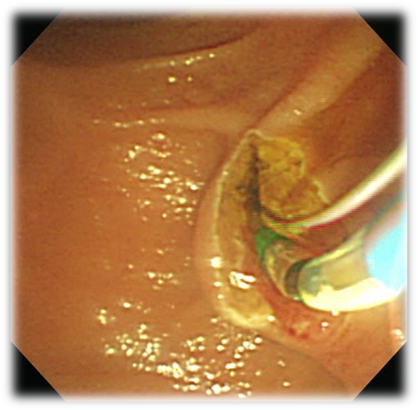

ERCP simulation
I have worked on this research since 2012. This is also my Master thesis topic at KAIST. This work mainly focuses on model of deformable objects, contact and cutting.
What I Do in ERCP Simulation
ERCP stands for Endoscopic Retrograde Cholangiopancreatography. This is a medical procedure that combines upper gastrointestinal (GI) endoscopy and X-rays to treat problem of bile duct and pancreatic duct. More information can be found at What is ERCP.
I research on a simulation of sphincterotomy, a procedure in ERCP. In this procedure, doctor use sphincterotome device to cut and enlarge major papilla of duodenum for cannulation.
Current Result
Simulation of sphincterotomy is being developed. We employ meshfree method to model soft tissue and develop a contact model and a cutting algorithm.
A real-time simulation is shown in the demonstration video. The simulation provides high fidelity in compared with real procedure (Captured image).
Real Sphincterotomy
Real image captured from ERCP video (Provided by Woman Medical Center, Korea)
Interactive simulation
Related Publication
Tuan Nguyen Trung, Hoeryong Jung, Myeongjin Kim, and Doo Yong Lee. (2013). A Method for Generating Cut Surface in Surgery Simulation, International Conference on Control, Automation and Systems (ICCAS 2013)
Tuan Nguyen Trung, Myeongjin Kim, and Doo Yong Lee. (2013). A Hybrid Contact Model for Cannulation Simulation of ERCP, Medical Meets Virtual Reality 21 (Submitted)